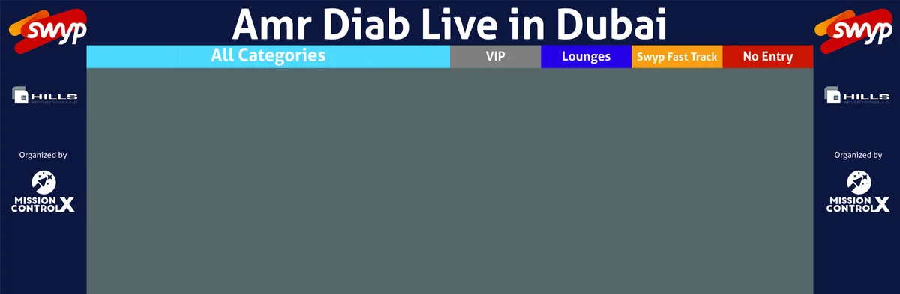
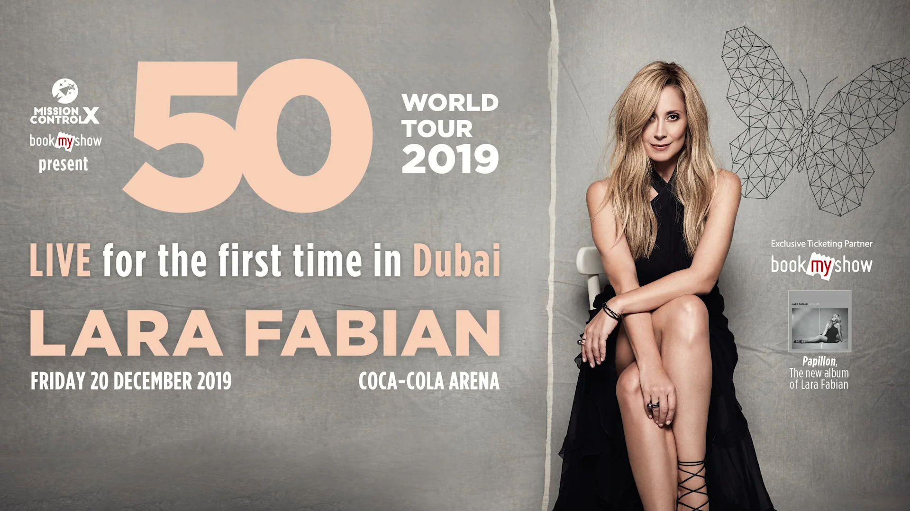

Live shows, Dubai, 2017 to 2018

Live shows · Dubai · 2017 to 2018 · with MCX
Five nights, one city.
Amr Diab, Angham, Mohamed Mounir, Magida El Roumi, Lilly Singh. Live shows in Dubai, 2017 to 2018: creative direction through AntBrush, with MCX as co-producer.
What we delivered.
Campaign & print
- Entrance gates: Mohamed Mounir, Amr Diab, Magida El Roumi
- For the sponsor, SWYP: VIP platform, grandstand, photo wall
- Snapchat filters and a web banner
- Angham: the promotion and a hotel partner
Screens & content
- Title and countdown animations: Amr Diab, Magida El Roumi
- Screens for Angham’s TV partner
Event
- Running orders
- SMS campaign; radio script for Mohamed Mounir
- Production on site, every night
The Mohamed Mounir gate, as drawn 
The Amr Diab gate, as drawn 
Mohamed Mounir Live in Dubai, 19 January 2018 
Angham Live in Dubai, the hall, 10 November 2017 
Angham Live in Dubai, the stage
From the job register, the project mail and the artwork files.
Five nights, one page each.
Each show with its own film, its own artwork and its own night.
 Mohamed Mounir Live in DubaiDubai Media City Amphitheatre · 19 January 2018 · SWYP presentsOpen the project →
Mohamed Mounir Live in DubaiDubai Media City Amphitheatre · 19 January 2018 · SWYP presentsOpen the project → Amr Diab Live in DubaiDubai Media City Amphitheatre · 29 December 2017 · SWYP presentsOpen the project →
Amr Diab Live in DubaiDubai Media City Amphitheatre · 29 December 2017 · SWYP presentsOpen the project → Angham Live in DubaiSheikh Rashid Hall, Dubai World Trade Centre · 10 November 2017Open the project →
Angham Live in DubaiSheikh Rashid Hall, Dubai World Trade Centre · 10 November 2017Open the project → Magida El Roumi Live in DubaiDubai Media City Amphitheatre · 26 January 2018 · Etisalat presentsOpen the project →
Magida El Roumi Live in DubaiDubai Media City Amphitheatre · 26 January 2018 · Etisalat presentsOpen the project → Lilly Singh Live in DubaiHabtoor Grand Resort, JBR · 10 May 2017Open the project →
Lilly Singh Live in DubaiHabtoor Grand Resort, JBR · 10 May 2017Open the project →
The gate is drawn first.
Mohamed Mounir Live in Dubai, January 2018. The entrance gate, drawn, then built on the night.


Another night, another gate.

Then the stage, then the night.
Four of the five nights, photographed from where the work was checked: the stage, the hall, the crowd.


The night, in motion.
Mohamed Mounir Live in Dubai, 2018 · recap film by MCX, trimmed
Work made for concerts that were cancelled.
DIDO, 13 December 2019, Dubai Media City Amphitheatre: cancelled the night before; she could not fly. The teaser, the stencil name built letter by letter, made by AntBrush for MCX; the concert footage is the artist’s own.


Amr Diab, Etihad Arena, Abu Dhabi, Eid al-Fitr 2020: the A3 layouts were made in February 2020, for a concert cancelled when events were suspended that spring.
Partner, Creative Director & Co-producer, through AntBrush, 2017 to 2022